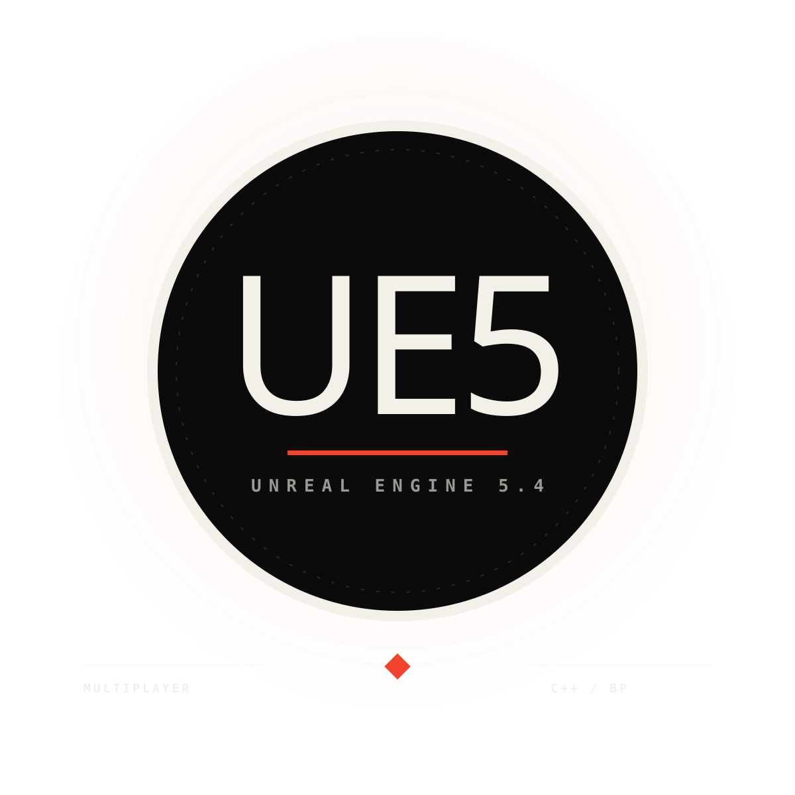

基于 Unreal Engine 5.4 与 C++ 实现第三人称网络射击：服务器通过 Server RPC 维护权威战斗状态，客户端负责本地瞄准、预测动画与 HUD 表现，Replication 同步关键数据，Server-Side Rewind 处理高延迟下的命中确认。

CombatComponent 与 AnimInstance 处理战斗和动画，GameMode、PlayerController 与 Replication 维护服务器权威状态，GameplayTag、Manifest、FastArray 和 Grid 构成数据驱动背包。
ECC_Visibility、接口队伍查询、PlayerState 复制与 CrosshairSpread。
Character / AnimInstanceAO_Yaw、Rotate Root Bone、双阈值状态与 FInterpTo。
WeaponState / FABRIKOwnerOnly、服务器装备、Socket 骨骼空间与 FABRIK。
UMG / OnlineSubsystemSteamGameInstanceSubsystem、异步 Delegate、MatchType 与 Travel。
AWeapon / Data Driven机制继承、武器身份、弹体关联与弹药职责。
MatchState / Time Sync服务器时间轴、样本过滤、单程延迟与本地倒计时。
Replication / Buff复合状态、OnRep、服务器恢复与按需 Tick。
Game Rules / RespawnGameMode 结算、GameState 得分、Multicast 与新 Pawn。
Strategy / CombatStateServer RPC、AnimNotify、装填策略与弹药 HUD 链路。
Prediction / Fire Loop枪口方向、本地预测、多播去重与连续开火。
HitBox / SSR历史 HitBox、环形缓冲、时间校准与权威伤害确认。
Pickup / Authority服务器 Overlap、生命周期、一次性保护与循环生成。
Manifest / FragmentGameplayTag、TInstancedStruct、序列化与数据组合。
FastArray / Delta稳定 ID、Dirty 标记、增量回调与子对象复制。
2D Grid / Placement二维边界、候选占用、堆叠填充与 Grid Widget。
HoverItem / Interaction区域检测、放置合并、连续交换与服务器丢弃。